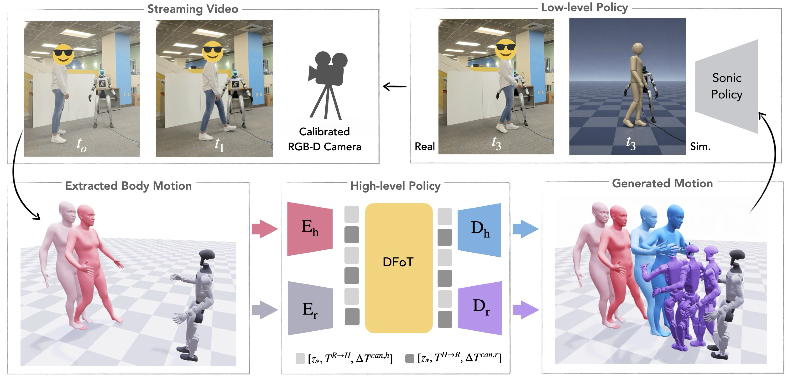
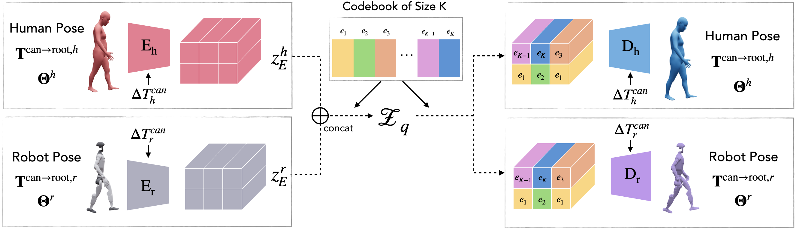

Abstract
Humanoid robots are typically trained as solitary agents, leaving them unable to coordinate physically with human partners who naturally anticipate and adjust to one another. To bridge this gap, we present Social Humanoid, a hierarchical system that generates and executes socially responsive whole-body motion on a 29-DoF Unitree G1 conditioned on a human partner's motion. Our approach decomposes the problem into a high-level policy and a low-level policy. For the high-level policy, we introduce a shared-codebook VQ-VAE that tokenizes human and humanoid motion into a unified latent space, enabling cross-embodiment conditional generation via a Diffusion Forcing Transformer. The low-level policy uses a whole-body tracking controller for deployment on the Unitree G1.
To train the system, we introduce a two-phase adaptive retargeting procedure that retargets one interaction partner to the robot while morphing the other partner to preserve contact dynamics, reachability, and relative body scale. We apply this procedure across five motion-capture datasets to produce a new Human-Humanoid Interaction (HHI) benchmark of 260 hours of paired human-humanoid interactions. Our results demonstrate that Social Humanoid produces coordinated, human-aligned behavior across diverse interaction types in simulation and the real world.
From Human–Human to Human–Humanoid
Human motion models can already generate realistic two-person interactions offline. Moving that to a physical humanoid exposes three gaps. Social Humanoid addresses each one.
HHI Benchmark
Five motion-capture datasets, converted into paired human–humanoid interactions for the Unitree G1 by adaptive retargeting.
28.1M frames of paired human–humanoid interaction for the 29-DoF Unitree G1, with contact, reach, and relative scale preserved.
Adaptive Retargeting
Pass I retargets the ego human to the G1, using contact-adaptive weights that keep the joints that matter for the interaction accurate. Pass II co-morphs the partner to match the G1’s shorter body, so contact, reach, and relative scale survive in hugs, high-fives, and linked-arm poses.

Retargeting Results
Inter-X
Hi4D
Hi4D
Inter-X
Inter-X
Method
A high-level policy generates the humanoid’s coordinated response; a low-level whole-body tracking controller executes it on the G1.
System Overview

Shared-codebook VQ-VAE
Human and humanoid motion live in different kinematic spaces. Embodiment-specific encoders map each into continuous latents, which are quantized against one shared EMA codebook; continuous and discrete alignment losses push paired poses onto the same codes. Embodiment-specific decoders then reconstruct each body from the shared tokens.

Sequence Modeling of Human–Humanoid Interaction
Given the observed history of human and humanoid motion, DFoT predicts the future motion of both agents. During training, context frames stay clean while every future frame is noised independently per agent and per timestep, which prevents the model from taking shortcuts. At inference, autoregressive DDIM sampling with a flexible noise schedule supports joint future generation, partner prediction, and reactive motion generation, all without retraining.
Denoising Schedule
An illustration of how DFoT assigns noise to each token, both when reacting to an observed human and when generating both futures while the human is occluded.
Generate the humanoid’s reaction to the observed human: the robot’s future is conditioned on both agents’ past and the human’s motion over the same window.
P(Bt:t+L | A0:t+L, B0:t−1)
Robot tokens are denoised with causal uncertainty: at every step, nearer tokens are less noisy than farther ones, so the response firms up from the present outward. Each human token becomes clean (observed) as its robot token begins denoising.
Embodiment Translation
Translating motion between human and humanoid bodies with the shared-codebook VQ-VAE.
Because both bodies share one discrete vocabulary, encoding a human motion and decoding it as a humanoid (or the reverse) gives a coherent translation.
Shadow Teleoperation
Shadow teleoperation of a Unitree G1, enabled by the shared-codebook VQ-VAE.
Real-World Results
Social Humanoid running live on a Unitree G1, from camera input to whole-body motion.
Hardware Demos
One system, many behaviors: handshakes, hugs, high-fives, waves, bows, reactions, and walking together.
Acknowledgements
We thank Zeldah Maluleke, Kaito Suzuki, Marsalis Gibson and Sharmita Dey for serving as the human partner in our real-world demonstrations and assisting with recording the demonstrations, and Zekai Wang and our BAIR colleagues for helpful discussions. This project was funded in part by BAIR sponsors, Bakar Fellows, NSF CAREER award no 2442491, the Humanoid Intelligence Center program, ONR MURI N00014-21-1-280, and MURI N000142612024
Citation
If you find this work useful, please cite:
@inproceedings{maluleke2026socialhumanoid,
title = {Social Humanoid: Socially Responsive Human--Humanoid Interaction},
author = {Maluleke, Vongani H. and Ni, James and Horiuchi, Kie and Wilken, Lea
and Lei, Jiahui and Ng, Evonne and Herzig, Roei
and Malik, Jitendra and Darrell, Trevor and Kanazawa, Angjoo},
booktitle = {Conference on Robot Learning (CoRL)},
year = {2026}
}